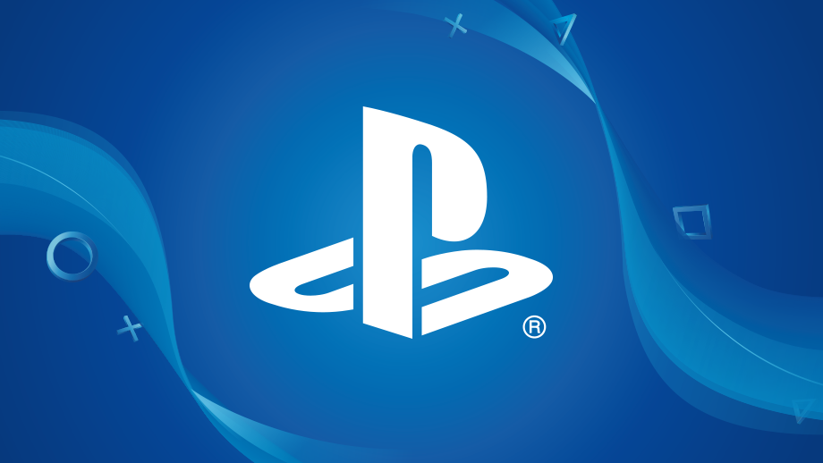
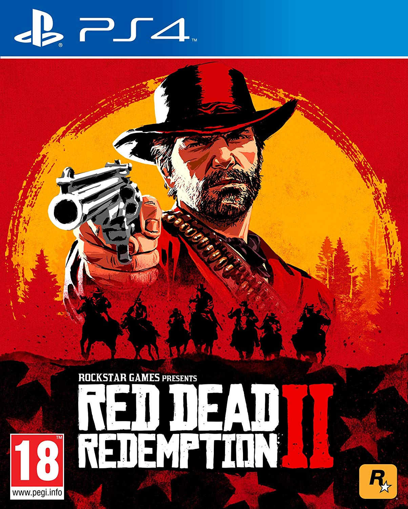

MENU
Historia |
PlayStation es una videoconsola
de sobremesa de 32 bits lanzada por Sony Computer
Entertainment el 3 de diciembre de 1994 en Japón.
Se considera la videoconsola más exitosa de la quinta
generación tanto en ventas como en popularidad. Además
de la original se lanzó la PSone. Tuvo gran éxito al
implantar el CD-ROM dentro de su hardware a pesar
de que otras compañías como SEGA (Sega CD),
Panasonic (3DO), Phillips (CD-i), SNK (Neo Geo CD),
NEC (Super CD ROM) y Atari (Atari Jaguar)
ya lo habían empleado. Dichas compañías
tuvieron poco éxito al utilizar el CD-ROM
como soporte para almacenar juegos. Se estima
que Sony logró vender 105 500 000 unidades de
su videoconsola en 10 años. La consola dejó
de fabricarse en 2006.

Top exclusivos de Ps |
Bloodborne |
Al 95% le gustó este videojuego
Descripción:Bloodborne es un videojuego de
rol de acción dirigido por Hidetaka Miyazaki,
desarrollado por From Software y JapanStudio
distribuido por Sony Computer Entertainment
para la plataforma de PlayStation 4.
Modos de juego: Un jugador, multijugador
Desarrollador: From Software
Diseñador: Hidetaka Miyazaki
Género: Videojuego de rol de acción
Plataforma: PlayStation 4
Premios: Premio BAFTA de Videojuegos al Mejor Diseño de Juego
Regresar al menu
Spider-Man |
Al 95% le gustó este videojuego
Descripción:Spider-Man es un videojuego de acción
y aventura basado en el popular superhéroe de la
editorial Marvel Comics. Fue desarrollado por Insomniac Games y
publicado por Sony Interactive Entertainment en
exclusiva para la consola PlayStation 4.
Se trata del primer videojuego licenciado
desarrollado por Insomniac.
Fecha de estreno inicial: 7 de septiembre de 2018
Serie: Videojuegos de Spider-Man
Clasificación(es): PEGI
Modos de juego: Un jugador
Desarrollador: Insomniac Games
Plataforma: PlayStation 4
Regresar al menu
Red Dead Redemption 2 |
Al 97% le gustó este videojuego
Descripción:Red Dead Redemption 2 es un
videojuego de acción-aventura western, en un
mundo abierto y en perspectiva de primera y
tercera persona, con componentes para un
jugador y multijugador. Fue desarrollado por
Rockstar Studios, para las consolas PlayStation 4.
Fecha de estreno inicial: 26 de octubre de 2018
Modos de juego: Un jugador; Multijugador
Premios: The Game Award for Best Narrative
Plataformas: PlayStation 4,
Desarrolladores: Rockstar Games, Rockstar
North, Rockstar San Diego
Diseñadores: Christian Cantamessa, Imran Sarwar

Regresar al menu
God of war |
Al 95% le gustó este videojuego
Descripción:God of War es un videojuego de
acción-aventura desarrollado por SCE Santa
Monica Studio y publicado por Sony Interactive
Entertainment. Su lanzamiento
se produjo el 20 de abril de 2018, en
exclusiva para la consola PlayStation 4.
Fecha de estreno inicial: 20 de abril de 2018
Desarrollador: SCE Santa Monica Studio
Modos de juego: Un jugador
Serie: God of War
Premios: The Game Award al Juego del Año, MÁS
Plataforma: PlayStation 4

Regresar al menu
The Last of Us |
Al 97% le gustó este videojuego
Descripción:The Last of Us es un videojuego de
acción-aventura y supervivencia de terror
desarrollado por la compañía estadounidense
Naughty Dog y distribuido por Sony Computer
Entertainment para la consola PlayStation 3 en 2013.
Fecha de estreno inicial: 14 de junio de 2013
Desarrollador: Naughty Dog
Género: Videojuego de acción-aventura
Diseñador: Jacob Minkoff
Premios: Spike Video Game Award a la Mejor
Interpretación de Personaje por un Humano Masculino.
Plataformas: PlayStation 4, PlayStation 3
Regresar al menu